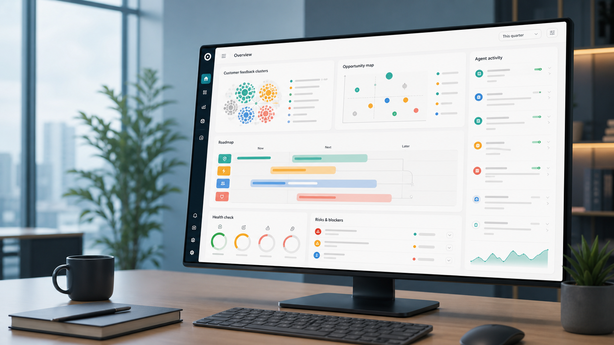

Opportunity intelligence
Scan market shifts, customer pain, workflow waste, and competitor moves to choose AI use cases that deserve to exist.
AI-native product manager · builder · strategist
This portfolio is framed around the work modern AI PMs actually need to do: find the right use case, design the data and context layer, define evals, prototype the experience, govern agent behavior, ship it, and prove business impact.

End-to-end AI product system
Scan market shifts, customer pain, workflow waste, and competitor moves to choose AI use cases that deserve to exist.
Define what the AI needs to know, where context comes from, what stays private, and how evidence is attached to outputs.
Choose between prompt, RAG, tool calling, agents, deterministic rules, or human review based on risk and value.
Write acceptance tests for quality, hallucination, latency, cost, safety, traceability, and user control before launch.
Build a working demo, instrument the flow, connect deployment, and make the experience concrete enough for real feedback.
Judge the product on time saved, support deflection, conversion lift, planning quality, retention, or revenue expansion.
AI PM point of view
Outputs should point back to source snippets, assumptions, confidence, and missing evidence so PMs can trust and defend them.
The right product is rarely “full autonomy.” It is controlled delegation: agents draft, score, retrieve, and review while humans approve.
A generic PRD generator does not prove AI product judgment. The product must understand context, constraints, risks, and measurement.
Adoption, token volume, and clicks are not enough. The bar is customer outcome, workflow compression, and business value.
Audience value layer
Try the value loop
Recommended build plan
It is the right flagship because it forces the full AI PM muscle: ingestion, context, synthesis, evidence, scoring, evals, governance, and measurable impact.
Interactive strategy board
Build shape
The platform should keep scanning PM signals, convert them into AI use cases, ship small tools, and publish what was learned about data, evals, UX, and ROI.
Track analyst notes, PM communities, tool launches, job descriptions, customer pain, and workflow waste.
Rank ideas by pain, data access, model fit, risk, eval clarity, monetization, and shipping effort.
Build a small working demo with UX, prompts, retrieval rules, eval criteria, and deployment notes.
Publish the product decision, what worked, what failed, and which metric the AI feature should move.